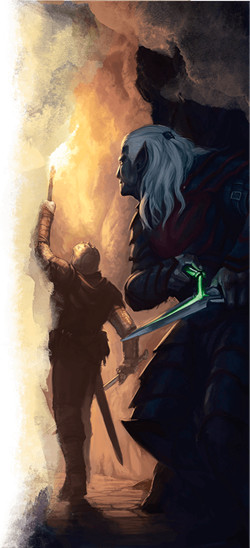

Le roublard D&D 5 pour les nuls
Vous êtes un voleur, un scélérat, un charlatan. Vous gagnez votre or en faisant les poches, ou peut-être en pratiquant l'art immonde du meurtre en tant qu'assassin pour un riche mécène. Vous pouvez avoir des relations secrètes avec le Zhentarim ou la guilde du Xanathar, ou simplement être un enfant de la rue qui a appris à survivre en faisant les poches.
Le roublard à D&D est un combattant du type « je frappe et je cours » qui inflige d'incroyables dégâts en combat, mais qui possède aussi de précieuses compétences hors combat pour crocheter des serrures, désarmer des pièges ou bien encore communiquer par codes. Et selon le choix de votre archétype, vous pouvez acquérir d'autres capacités pour fabriquer des illusions magiques, concevoir de remarquables déguisements ou bien encore réaliser d'incroyables acrobaties. Cette aide de jeu va vous présenter les bases du roublard sur les 5 premiers niveaux afin de vous y retrouver.
Créer votre roublard
Sans aller jusqu'à parler d'optimisation, la première étape pour bien jouer votre classe est de construire votre personnage efficacement.
- Choisissez votre race. N'importe laquelle peut faire un bon roublard, mais préférez celles qui améliorent votre valeur de Dextérité. Les halfelins font d'excellents roublard grâce à leur bonus racial en Dextérité. Un halfelin pied-léger a en plus la capacité Discrétion naturelle pour se cacher derrière des créatures plus grandes que lui, comme les membres de votre groupe de taille M. Les elfes sont aussi de bons roublards pour la même raison (bonus racial en Dextérité) et les elfes de bois ont la capacité Cachette naturelle qui leur permet de se cacher facilement dans la nature. Les gnomes des forêts font de très bons escrocs arcaniques grâce à leur bonus en Dextérité et leur capacité à fabriquer des illusions simples avec Illusionniste-né. Et les tieffelins ont des traits raciaux utiles pour un roublard, comme le fait de ne pas avoir besoin de lumière pour voir dans le noir et le sort thaumaturgie pour faire distraction.
- Choisissez la classe de roublard (évidemment !).
- Choisissez des compétences qui correspondent à ce que vous voulez que soit votre personnage. Presque tous les roublards choisissent Perception (pour repérer les pièges) et Discrétion (pour se rendre la vie plus facile). Ensuite, un filou devrait être compétent dans la compétence Tromperie, alors qu'un enquêteur devrait plutôt être compétent en Investigation. Au final, les voleurs ont de nombreuses compétences, alors n'hésitez pas à choisir des compétences inhabituelles pour faire de votre personnage quelqu'un d'unique.
- Placez votre valeur de caractéristique la plus élevée en Dextérité. Votre deuxième meilleure valeur dépend de l'archétype que vous pensez prendre un niveau 3. Si vous voulez jouer un voleur ou un assassin, votre deuxième meilleure caractéristique devrait être la Sagesse. Si vous voulez jouer un escroc arcanique, cela devrait être l'Intelligence, et pour un bretteur, le Charisme.
- Choisissez un historique qui colle avec le concept de votre personnage.
- Pour votre équipement, choisissez :
- une rapière si vous voulez vous battre avec une arme à une main, ou une épée courte si vous voulez utiliser deux armes.
- un arc court si vous voulez aussi être capable de vous battre à distance, ou une autre épée courte si vous voulez utiliser deux armes.
- un sac de cambrioleur si vous pensez passer du temps dans les villes, un sac d'exploration souterraine si vous pensez explorer de vieilles ruines, ou un sac d'explorateur si vous pensez voyager beaucoup.
- une armure de cuir, deux dagues et des outils de voleur (pas de choix à faire ici).
Quel type de roublard ?
En tant que roublard, votre palette de compétences est un mélange inhabituel de puissance offensive et d'utilité hors-combat. Tous les roublards combinent en effet un rôle d'attaque et de soutien, car ils sont plus définis par leurs capacités de classe de base que par celles de leur sous-classe, même si les voleurs et les escrocs arcaniques sont un peu plus axés soutien et les assassins plus axés offensive. Car si vous parvenez à utiliser votre Attaque sournoise à chaque round, vous aurez probablement la meilleure moyenne de dégâts par round de tout votre groupe.
Vous aurez certes probablement besoin de la protection de vos compagnons pour survivre une fois dans la mêlée, mais vous avez aussi de nombreuses façons d'atténuer les dégâts si vous vous retrouvez seul. Bien que vous ne puissiez porter une armure lourde, une armure de cuir clouté et une Dextérité élevée permettent d'obtenir une CA de 15, ce qui est tout à fait respectable au niveau 1 (en supposant un bonus de Dextérité de +3), et vos capacités Ruse et Esquive instinctive (que vous gagnez aux niveaux 2 et 5 respectivement) vous confèrent un pouvoir défensif encore plus fort.
Se battre comme un roublard
La plupart des roublards se jouent plus ou moins de la même manière durant les deux premiers niveaux, et ne commencent à diverger que lorsqu'ils choisissent l'archétype au niveau 3. Cependant, le choix de vos armes et votre préférence pour l'offensive ou le soutien joueront un rôle important dans ce que votre roublard sera, à la fois en et hors du combat.
Au niveau 1, vous gagnez l'une de vos capacités les plus importantes : Attaque sournoise. Formulée d'une manière un peu confuse, en voici une lecture simplifiée : « Chaque fois que vous avez un avantage à un jet d'attaque, vous infligez des dégâts d'Attaque sournoise. Vous infligez également des dégâts d'Attaque sournoise si un allié est adjacent à la créature que vous attaquez. Cependant, vous n'infligez jamais de dégâts d'Attaque sournoise si vous avez un désavantage à un jet d'attaque. Vos dégâts d'Attaque sournoise sont indiqués dans la colonne "Attaque sournoise" de la table de votre classe ».
Au niveau 1 encore, vous gagnez la capacité Expertise qui vous permet de doubler votre bonus de maîtrise à deux compétences ou outils de votre choix. Gagner de l'expertise dans la compétence Discrétion et les outils de voleur est toujours un bon choix, mais c'est à vous de déterminer quelles sont vos compétences préférées.
Toujours au niveau 1, vous apprenez le jargon des voleurs, une langue secrète parlée seulement par les voleurs et d'autres personnes au passé criminel. L'utilité de cette capacité dépend de vous et de votre MD (ou d'autres joueurs roublards de votre groupe). Il pourrait être crucial de briser un code secret dans une aventure centrée sur des voleurs... ou vous pourriez ne jamais avoir à l'utiliser. Si vous voulez rendre cette capacité utile et que votre MD ne vous en donne pas l'occasion, parlez-en avec lui et élaborez une histoire centrée sur des voleurs.
Au niveau 2, vous gagnez la capacité Ruse, souvent sous-estimée par les nouveaux joueurs, qui vous permet d'utiliser votre action bonus pour Foncer, Se désengager ou Se cacher. Vous pouvez utiliser cette action bonus à chaque tour si vous le souhaitez, ce qui est un énorme avantage en combat.
- Foncer vous permet de courir jusqu'à 27 mètres en un seul tour si vous utilisez votre mouvement normal, puis Foncer en tant qu'action et de nouveau en temps qu'action bonus (si vous avez une vitesse de déplacement de 9 mètres).
- Se désengager permet de courir à travers une pièce pleine d'ennemis directement vers la sortie en prenant Se désengager en tant qu'action et de nouveau en temps qu'action bonus. Vous pouvez également courir, attaquer en tant qu'action, puis utiliser Se désengager en tant qu'action bonus pour vous échapper.
- Se cacher permet de sortir de sa cachette, d'attaquer furtivement un ennemi (n'oubliez pas l'avantage aux attaques contre des ennemis qui ne vous voient pas venir), puis de se cacher à nouveau.
Au niveau 3, vous choisissez un archétype de roublard. Il y en a trois dans le Manuel des Joueurs (voleur, assassin et escroc arcanique) et deux autres issus du Xanathar's Guide to Everything sont présentés sur Tapouweb (bretteur et conspirateur). Toutes ces sous-classes sont une combinaison d'options d'attaque et de soutien, mais certaines sont plus inclinées dans un sens ou dans l'autre.
Offensif
Un roublard qui veut augmenter ses dégâts devrait choisir l'un des archétypes suivants : assassin ou bretteur.
Au niveau 3 en tant qu'assassin, vous gagnez la capacité Assassinat, qui facilite l'Attaque sournoise au premier tour de combat et vous permet d'infliger des dégâts critiques aux créatures que vous surprenez. Notez que surprendre une créature est différent de l'Attaque sournoise ou d'avoir un avantage. Vous ne pouvez pas surprendre une créature si elle est consciente de votre présence, de quelque façon que ce soit.
Au niveau 3 en tant que bretteur, vous gagnez les capacités Jeu de jambes sophistiqué et Audace désinvolte, qui vous permettent d'être un loup solitaire au combat. Jeu de jambes sophistiqué vous permet de déplacer des créatures contre lesquelles vous vous battez au corps à corps (même en cas d'échec) sans provoquer d'attaque d'opportunité, et Audace désinvolte vous octroie les dégâts d'Attaque sournoise lorsque vous attaquez des créatures sans alliés ni ennemis autour d'elles. Si certains roublards doivent compter sur leur groupe pour les aider à mettre en place des situations d'Attaque sournoise, un bretteur est libre de se déplacer sur le champ de bataille ou dans les couloirs d'un donjon et prendra facilement des cibles.
Soutien
Un roublard qui veut aider le groupe ou commettre des méfaits devrait choisir l'un des archétypes suivants : voleur, escroc arcanique ou conspirateur.
Au niveau 3 en tant que voleur, vous gagnez Mains lestes et Monte-en-l'air, deux capacités qui facilitent l'infiltration rapide des lieux. Mains lestes vous permet même de boire une potion (en utilisant l'action Utiliser un objet) comme action bonus, vous permettant d'attaquer au même tour !
Au niveau 3 en tant qu'escroc arcanique, vous obtenez la capacité de lancer des sorts. Vous devriez apprendre les sorts mineurs amis et illusion mineure, et les sorts couleurs dansantes, déguisement et fou rire de Tasha. Déguisement permet de s'infiltrer plus facilement dans les lieux et de tromper les autres, couleurs dansantes est une distraction utile lorsque vous devez échapper à un combat, et fou rire de Tasha est un moyen simple d'obtenir un avantage (pour ensuite placer une Attaque sournoise) face à des ennemis ennuyeux.
Au niveau 3 en tant que conspirateur, vous gagnez la capacité Maître des intrigues qui vous permet d'imiter d'autres créatures et vous octroie plusieurs maîtrises supplémentaires. Vous bénéficiez également de Maître des tactiques, qui vous permet d'aider vos alliés à distance avec une action bonus. Cela vous permet d'utiliser votre action bonus offensivement pour aider votre groupe au lieu de défensivement pour sauver votre propre peau.
Au niveau 4, vous augmentez une caractéristique. Vous devriez augmenter votre Dextérité de +2. Si vous décidez plutôt de prendre un don, Chanceux est un excellent choix pour un roublard, car il rend plus probable le succès des jets importants, et comme vous ne pouvez faire qu'une seule attaque par tour, cela a toute son importance. Combattant monté est un don particulier qui, si vous êtes monté, vous donne un avantage face aux créatures non-montées qui sont plus petites que votre monture. Un roublard à cheval peut ainsi toujours porter des Attaques sournoises à d'autres humains qui ne sont pas montés, mais c'est un don situationnel très puissant qui n'applique que dans des cas bien spécifiques.
Au niveau 4 également, en tant qu'escroc arcanique, vous devriez apprendre les sorts image silencieuse ou sommeil. Choisissez image silencieuse si vous voulez vous concentrer sur le soutien, ou sommeil si vous voulez être meilleur à l'offensive.
Au niveau 5, vous gagnez la capacité Esquive instinctive, qui vous permet d'utiliser votre réaction pour réduire de moitié les dégâts d'une attaque faite contre vous par une créature que vous pouvez voir. Bien que cette capacité n'ait aucun effet sur les sorts et les capacités qui ne font pas de jet d'attaque (voir Évasion au niveau 7 pour cela), c'est une énorme amélioration de vos capacités défensives. Vous ne pouvez l'utiliser qu'une fois par tour car cela nécessite votre réaction, mais vous devriez l'utiliser rapidement et souvent pour ne pas la gaspiller.
Improviser comme un roublard
IMPROVISEZ DES ACROBATIES
Les armes improvisées font parties des règles de D&D, mais en utiliser une est généralement moins efficace que d'utiliser une arme que vous maîtrisez. Improviser un coup bas pendant un combat est par contre une autre affaire !
Toutefois, les meilleurs trucs ne s'utilisent qu'une seule fois ; utiliser la même tactique encore et encore va vite devenir ennuyeux pour vos compagnons. Alors essayez plutôt d'imaginer vos acrobaties à la volée. C'est ça l'improvisation : penser rapidement.
Les capacités de classe, les dons et les valeurs de caractéristiques ne sont qu'une infime partie de ce qui rend un roublard (ou toute autre classe) amusant à jouer. Les règles sont importantes parce qu'elles posent les bases, mais D&D devient vraiment passionnant lorsque vous prenez votre destin en main et improvisez vos actions. Et les roublards sont particulièrement adaptés à ce genre d'improvisation, car dans le jeu ils ne jouent pas selon les règles, ils se battent de manière « sale », ils ont le courage de sauter avant de regarder et survivent souvent à des situations impossibles.
L'identité narrative d'un roublard peut être modélisée à D&D en leur accordant de nombreuses maîtrises de compétences et même de l'Expertise. Le don Chanceux est aussi intéressant lorsque les dés essayent de ruiner vos ambitions créatives. Toutefois, la limite de ce système est souvent le MD. Il est pourtant bon de vous laisser prendre des risques, même si vous avez peu de chance de succès, parce qu'un échec spectaculaire est souvent aussi amusant qu'une victoire contre toute attente. Alors si votre MD hésite à vous autoriser des actions improvisées, parlez-en directement avec lui. Il n'y a rien de mieux que de se parler.
Personnaliser son roublard
Ce guide se concentre sur les règles de D&D et comment faire pour les utiliser à votre avantage. Mais malgré ces conseils sur les capacités, les statistiques et les bonus, n'oubliez pas que votre personnage est bien plus que cela. Sa personnalité doit avoir un impact sur votre façon de jouer et faire le plus de dégâts possible n'est pas forcément l'objectif que vous souhaitez atteindre à D&D. Faire des blagues, décrire des moments cinématographiques ou provoquer les remerciements des autres joueurs lorsque vous réussissez un bel exploit sont aussi des objectifs que certains joueurs recherchent. Vous pouvez de même préférer l'alchimie et les poisons aux dégâts des armes.
En fait, pour un roublard, l'improvisation est au centre du jeu. Vivez votre côté hors-la-loi et n'ayez pas peur d'enfreindre certaines règles (si votre MD est d'accord). Votre personnalité et votre panache feront de vous un roublard incomparable.
Allez crocheter la serurre de ce coffre maintenant !
Basé sur un article de James Haeck, traduit par blueace